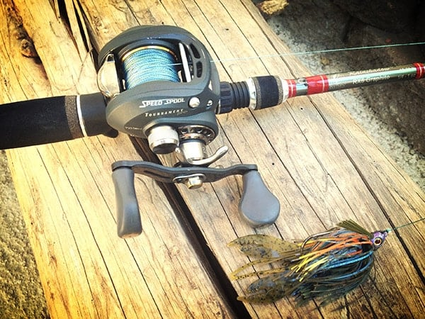
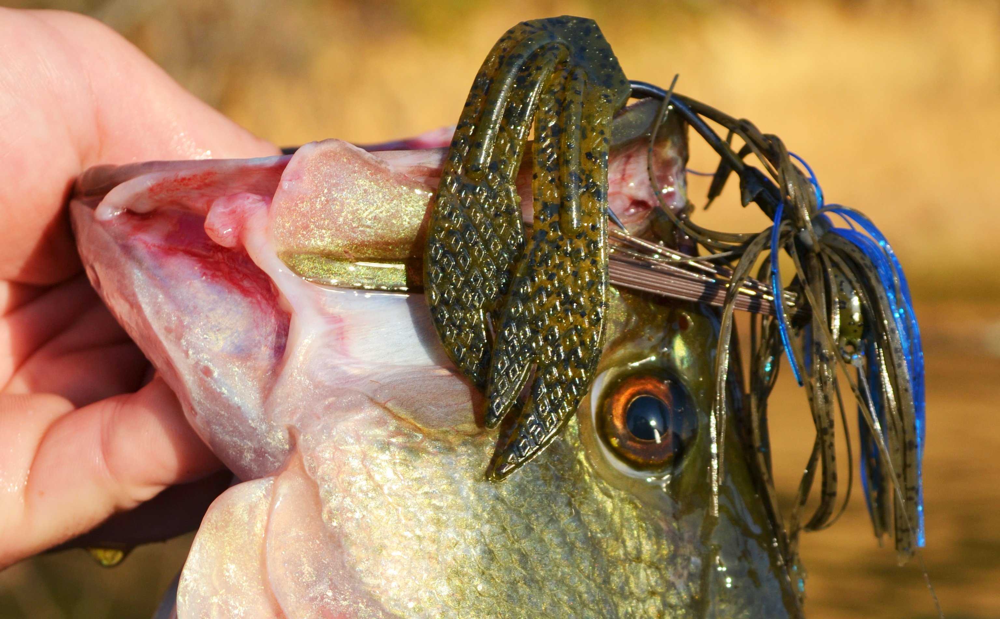

One of the simplest, yet most effective tools an angler can have in their arsenal is a jerkbait. This lure can be used from coast to coast and is responsible
for catching tons of giant bass. This lure is extremely easy to use and doesn’t require any specialized equipment. You can fish this bait in a variety of
scenarios, and it truly works on every lake in the country. Throwing a jerkbait is simple, however there are several nuances that will help you become a more
successful jerkbait angler. This feature highlights some of those nuances while explaining how to fish a jerkbait
ROD

Rod, Reel, and Line
Long rods work more effectively with jigs because the length provides more leverage in deeper water and the accurate positioning of your bait. The rod must be
about 6′ to 7′ feet long to use effectively. In addition, it should be robust, a medium to fast action rod that helps pull some hard fighting bass out of the thick cover.
Jig fishing works best on baitcasting equipment for several reasons: they are generally used with heavier line around thicker cover, and the weight of the lures makes them
better on heavier baitcasting gear.
You can have too stiff of a rod, but a rod too soft will cost you fish. Most prefer a baitcasting rod when jig fishing, but you can use a spinning rod effectively if long
and stiff enough.
REEL
Using grass jigs to pitch or flip, you should use baitcasting equipment.
Many anglers prefer cast reels as they can give greater accuracy of your pitch or flip. A baitcasting reel packed with a fluorocarbon line with a 6.21 reel is an
industry-standard. However, the biggest motivation for anglers over a spinning reel is its weight alone.
Using a spinning reel big enough for a 1-1/2 jig would be incredibly heavy as to why spinning is closing the gap in performance for efficiency. Angles will always
favor convention reels since they have increased weight, speed, accuracy, and ability to control.
LINE
A baitcasting reel spooled with 12–17lb test fluorocarbon line rounds out the entire combination.
The rod and reel should be sensitive enough to detect bites yet strong enough to get a good hookset when a bass bites your jig.
When fishing a smaller sized jig, I like to downsize my setup. I like a longer medium-heavy power rod with lighter line. This lighter line gives the bait
a far more natural look and it really compliments the lighter sized jig. I typically stick with 12-pound fluorocarbon
There's a fine line between fishing and just standing on the shore like an idiot." - Steven Wright
How & When to Jig!

Patients is KEY!
If fishing in dirty or stained waters, it helps to use a black-and-blue combination. Specific jigs often imitate bluegill and shad with color matching.
For example, Bluegill imitation uses green pumpkin or jig in blue to match hatches for a bass meal. For simulated shads, a white dress and white trailer work very well.
The wind is an essential factor affecting fishing. The bigger, the heavier the wind blows; it requires a more significant size lure. If the wind blows your line, the jig
is too light; you won’t remain in contact with the bottom. The heavier jigs help you overtake the wind and reach the bottom.However, don’t be afraid to use a heavier jig
head but a smaller jig in size. Keep it moving by working it up and down. It will help a bass decide sooner when it looks and acts more like a natural crawfish.
It is perfect for short casts, pitches, and turns with reflected surface cover. The bass will sometimes hold on to the lure, and it must also be a priority in watching it
fall. Long hops that keep the water close to the bottom for retrieval can be helpful. A tiny action on the rod and pump allows baits to move in a streamline. Use short
hops; the football head can best succeed with this underwater technique.